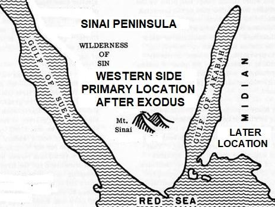

After the Exodus, the Israelites lived in the Sinai Peninsula for a period of time.
যাত্রার পর, ইস্রায়েলীয়রা কিছু সময়ের জন্য সিনাই উপদ্বীপে বসবাস করেছিল।
FIGURE 28.1: Western Side / Sinai Peninsula In the Sinai Peninsula, many stones are still found with images of cows, suggesting that the locals worshiped the cow. The newly arrived Israelites imitated this practice by making a golden calf, for which they were punished. The worship of the cow may have originated from this region and spread to India. The Indian Brahmins might trace their roots to the Sinai Peninsula and could also be descendants of some Midianites. The Midianites were descendants of Abraham through his wife Keturah. Subsequently, the followers of Moses moved to the eastern side of the Gulf of Aqaba, where the Midianites had lived before they were destroyed.

চিত্র 28_1 / Figure 28_1
চিত্র 28.1: ওয়েস্টার্ন সাইড / সিনাই উপদ্বীপ সিনাই উপদ্বীপে, গরুর ছবি সহ অনেক পাথর এখনও পাওয়া যায়, যা থেকে বোঝা যায় যে স্থানীয়রা গরুর পূজা করত। নতুন আগত ইস্রায়েলীয়রা এই প্রথা অনুকরণ করে সোনার বাছুর তৈরি করেছিল, যার জন্য তাদের শাস্তি দেওয়া হয়েছিল। এই অঞ্চল থেকে গরু পূজার উৎপত্তি হয়ে ভারতে ছড়িয়ে পড়ে থাকতে পারে। ভারতীয় ব্রাহ্মণরা সিনাই উপদ্বীপে তাদের শিকড় খুঁজে পেতে পারে এবং কিছু মিডিয়ানদের বংশধরও হতে পারে। মিদিয়ানরা আব্রাহামের বংশধর ছিল তার স্ত্রী কেতুরার মাধ্যমে। পরবর্তীকালে, মূসার অনুসারীরা আকাবা উপসাগরের পূর্ব দিকে চলে যায়, যেখানে তারা ধ্বংস হওয়ার আগে মিদিয়ানরা বাস করত।
চিত্র 28_1 / Figure 28_1
And you were not on the Western Side when We decreed to Moses the Commandments, nor were you a witness.
আর তুমি পশ্চিম দিকে ছিলে না যখন আমরা মূসাকে নির্দেশ দিয়েছিলাম এবং তুমি সাক্ষীও ছিলে না।
By ―Western Side‖, the verse means the ―western side of the Gulf of Aqabah‖. It is Sinai Peninsula. The Commandments (Ten Commandments) were decreed to Moses on the Mount of Sinai. It was divinely written on stone tablets. The Ten Commandments in short are: 1. Thou shalt not have any other Elohim before My face. 2. Thou shalt not make a graven image for yourself, or any likeness in the heavens above, or in the earth beneath, or in the waters under the earth. 3. Thou shalt not take the name of YAHWEH your Elohim in vain. 4. Remember the Sabbath day to keep it holy. 5. Honor your father and your mother so that thy days may be long on the land, which YAHWEH your Elohim is giving to you. 6. Thou shalt not murder. 7. Thou shalt not commit adultery. 8. Thou shalt not steal. 9. Thou shalt not testify a witness of falsehood against thy neighbor. 10. Thou shalt not covet your neighbor's house; you shall not covet thy neighbor's wife, or his male slave, or his slave-girl, or his ox, or his donkey, or anything which belongs to your neighbor. [Exodus 20: 3-17]
"পশ্চিম দিক" দ্বারা, আয়াতটির অর্থ "আকাবা উপসাগরের পশ্চিম দিক"। এটি সিনাই উপদ্বীপ। সিনাই পর্বতে মূসাকে আদেশ (দশ আদেশ) দেওয়া হয়েছিল। এটি পাথরের ফলকে ঐশ্বরিকভাবে লেখা ছিল। সংক্ষেপে দশটি আদেশ হল: 1. আমার মুখের সামনে আপনার অন্য কোন ঈশ্বর থাকবে না। 2. আপনি নিজের জন্য একটি খোদাই করা মূর্তি তৈরি করবেন না, বা উপরে স্বর্গে বা নীচে পৃথিবীতে বা পৃথিবীর নীচে জলে কোনও প্রতিমা তৈরি করবেন না। 3. আপনি নিরর্থকভাবে আপনার ঈশ্বর যিহোবার নাম গ্রহণ করবেন না। 4. বিশ্রামবারকে পবিত্র রাখার জন্য মনে রাখবেন। 5. তোমার পিতা ও মাতাকে সম্মান করো যাতে তোমার ঈশ্বর সদাপ্রভু তোমাকে যে দেশে দিচ্ছেন সেখানে তোমার দিন দীর্ঘ হয়। 6. খুন করবেন না। 7. তুমি ব্যভিচার করবে না। 8. তুমি চুরি করবে না। 9. আপনি আপনার প্রতিবেশীর বিরুদ্ধে মিথ্যা সাক্ষীর সাক্ষ্য দেবেন না। 10. তুমি তোমার প্রতিবেশীর বাড়ির লোভ করো না; তুমি তোমার প্রতিবেশীর স্ত্রী, তার দাস, বা দাসী, তার বলদ, গাধা বা প্রতিবেশীর কোন কিছুর প্রতি লোভ করবে না। [যাত্রাপুস্তক 20: 3-17]
But We raised up generations and long were the ages that passed over them. But you were not a dweller among the people of Madyan (Midian) rehearsing Our signs to them, but it is We Who send apostles. Nor were you at the side of the Tur when we called. Yet as mercy from thy Lord (the Quran is given) to give warning to a people to whom no Warner had come before thee, in order that they may receive admonition, if not, in case a calamity should seize them for that their hands have sent forth, they might say: "Our Lord! Why did You not send us an apostle? We should then have followed Thy Verses and been among those who believe!" But, when the Truth (the Quran) has come to them from Ourselves, they say: "Why are not sent to him like those which were sent to Moses?" Did they (Jews) not reject which were formerly sent to Moses? They said: "Two kinds of sorcery, each assisting the other!" And they said: "For us, we reject all!"
কিন্তু আমি বহু প্রজন্মের উত্থান করেছি এবং তাদের উপর বহু যুগ অতিবাহিত হয়েছে। কিন্তু আপনি মাদইয়ানের অধিবাসী ছিলেন না যে তাদের কাছে আমার নিদর্শনাবলী পাঠ করছিলেন, কিন্তু আমিই রসূল প্রেরণ করি। আমরা যখন ডাকলাম তখন তুমি তুরের পাশে ছিলে না। তথাপি আপনার পালনকর্তার রহমত হিসাবে (কুরআন দেওয়া হয়েছে) এমন একটি সম্প্রদায়কে সতর্ক করার জন্য যাদের কাছে আপনার পূর্বে কোন সতর্ককারী আসেনি, যাতে তারা উপদেশ গ্রহণ করতে পারে, যদি না হয়, যদি তাদের হাত অগ্রসর হওয়ার কারণে তাদের উপর বিপদ এসে পড়ে, তারা বলবে: "হে আমাদের প্রভু! আপনি আমাদের কাছে একজন রসূল পাঠালেন না কেন? তাহলে আমরা আপনার বিশ্বাসীদের মধ্যে থাকতাম এবং তাদের অনুসরণ করতাম!" কিন্তু, যখন তাদের কাছে সত্য (কুরআন) আমাদের পক্ষ থেকে এসেছে, তখন তারা বলে, কেন তার কাছে মূসার কাছে প্রেরিতদের মত পাঠানো হয়নি? তারা (ইহুদীরা) কি তা প্রত্যাখ্যান করেনি যা পূর্বে মূসার কাছে পাঠানো হয়েছিল? তারা বললো: "দুই প্রকারের যাদু, প্রত্যেকটি অপরটিকে সাহায্য করে!" এবং তারা বলল: "আমাদের জন্য, আমরা সব প্রত্যাখ্যান করি!"
The Book of Moses was given in written tablets all at once—it was time-consuming to read, and following it was a far cry for a people like the Israelites. Therefore, the concise Ten Commandments were given so that the Jews could follow them and lead an easier life. However, they ultimately rejected both, saying that: "Two kinds of sorcery, each assisting the other!" And they said: "For us, we reject all!"
মূসার বইটি একবারে লিখিত ট্যাবলেটে দেওয়া হয়েছিল - এটি পড়া সময়সাপেক্ষ ছিল এবং এটি অনুসরণ করা ইস্রায়েলীয়দের মতো লোকেদের জন্য অনেক দূরের কথা ছিল। তাই, সংক্ষিপ্ত দশটি আদেশ দেওয়া হয়েছিল যাতে ইহুদিরা তাদের অনুসরণ করতে পারে এবং একটি সহজ জীবনযাপন করতে পারে। যাইহোক, তারা শেষ পর্যন্ত উভয়কেই প্রত্যাখ্যান করেছিল, এই বলে যে: "দুই ধরনের জাদুবিদ্যা, প্রতিটি অন্যকে সহায়তা করে!" এবং তারা বলল: "আমাদের জন্য, আমরা সব প্রত্যাখ্যান করি!"
Say: "Then bring ye a Book from God, which is a better guide than either of them that I may follow it, if ye are truthful!" But if they hearken not to thee, know that they only follow their own lusts. And who is more astray than one who follows his own lusts devoid of guidance from God? For God guides not people given to wrongdoing.
বল, "তাহলে তোমরা আল্লাহর পক্ষ থেকে এমন একটি কিতাব আন, যা তাদের উভয়ের চেয়ে উত্তম পথপ্রদর্শক, যাতে আমি তার অনুসরণ করতে পারি, যদি তোমরা সত্যবাদী হও।" কিন্তু যদি তারা তোমার কথা না শোনে, তবে জেনে রেখো যে, তারা কেবল তাদের প্রবৃত্তির অনুসরণ করে। আর তার চেয়ে বেশি পথভ্রষ্ট আর কে হবে যে আল্লাহর নির্দেশনা ছাড়া নিজের খেয়াল-খুশির অনুসরণ করে? কারণ ঈশ্বর অন্যায়ের জন্য প্রদত্ত লোকদের পথ দেখান না।
People asked for a similar book from Muhammad (pbuh), but Allah, the Wise, revealed the Quran in small parts. The people witnessed its practical implications and memorized it gradually. By the time the entire Quran had been revealed over 23 years, they were familiar with it, and many had memorized the whole Quran. Thus, the Arabs did not feel the weight of a mountain on their backs and did not need a 'Ten Commandments'. Section-9 of Chapter 28 [Verse 51-55]: People that follow the Revelation
লোকেরা মুহাম্মাদ (সাঃ) এর কাছ থেকে অনুরূপ একটি বই চেয়েছিল, কিন্তু আল্লাহ, জ্ঞানী, ছোট অংশে কুরআন নাজিল করেছিলেন। লোকেরা এর ব্যবহারিক প্রভাব প্রত্যক্ষ করেছে এবং ধীরে ধীরে তা মুখস্ত করেছে। 23 বছরের মধ্যে পুরো কুরআন নাযিল হওয়ার সময়, তারা এটির সাথে পরিচিত ছিল এবং অনেকে পুরো কুরআন মুখস্থ করেছিল। সুতরাং, আরবরা তাদের পিঠে একটি পাহাড়ের ভার অনুভব করেনি এবং একটি 'দশ আদেশের' প্রয়োজন ছিল না। অধ্যায় 28 এর অধ্যায়-9 [শ্লোক 51-55]: লোকেরা যারা প্রকাশকে অনুসরণ করে
Now have We caused the Word to reach them in order that they may receive admonition. Those to whom We sent the Book before this, they do believe in this. And when it is recited to them, they say: ―We believe therein, for it is the Truth from our Lord, indeed we have been Muslims from before this.‖ Twice will they be given their reward for that they have persevered, that they avert Evil with Good, and that they spend out of what We have given them; and when they hear vain talk, they turn away therefrom and say: "To us our deeds and to you yours, peace be to you, we seek not the ignorant."
এখন আমি তাদের কাছে কালাম পৌঁছে দিয়েছি যাতে তারা উপদেশ গ্রহণ করে। এর আগে আমি যাদের কাছে কিতাব পাঠিয়েছি, তারা এতে বিশ্বাস করে। এবং যখন তাদের কাছে এটি পাঠ করা হয়, তখন তারা বলে: "আমরা এতে বিশ্বাস করি, কারণ এটি আমাদের পালনকর্তার পক্ষ থেকে সত্য, আমরা এর আগে থেকেই মুসলমান ছিলাম।" তাদের জন্য তাদের পুরষ্কার দ্বিগুণ করা হবে যে তারা ধৈর্য্য ধরেছে, তারা মন্দকে কল্যাণের সাথে প্রতিহত করে এবং তারা যা দিয়েছি তা থেকে তারা ব্যয় করে; আর যখন তারা অনর্থক কথা শোনে, তখন তা থেকে মুখ ফিরিয়ে নেয় এবং বলে, আমাদের জন্য আমাদের কাজ এবং তোমাদের জন্য তোমাদের, তোমাদের জন্য শান্তি, আমরা অজ্ঞদের খোঁজ করি না।
It is true, thou will not be able to guide everyone whom thou love, but God guides those whom He will, and He knows best those who receive guidance. They say: "If we were to follow the guidance with thee, we should be snatched away from our land." Have We not established for them a secure sanctuary, to which are brought as tribute fruits of all kinds, a provision from Ourselves? But most of them understand not. And how many populations We destroyed which exulted in their life! Now those habitations of theirs, after them, are deserted—all but a few! And We are the sole heirs! Nor was thy Lord the one to destroy a population until He had sent to its center an apostle, rehearsing to them Our Verses; nor are We going to destroy a population except when its members practice iniquity.
এটা সত্য, আপনি যাকে ভালোবাসেন তাদের সবাইকে পথ দেখাতে সক্ষম হবেন না, কিন্তু আল্লাহ যাকে ইচ্ছা তাকেই পথ দেখান এবং যারা পথপ্রদর্শন করে তাদের তিনিই ভালো জানেন। তারা বলেঃ আমরা যদি তোমার সাথে হেদায়েতের অনুসরণ করি তবে আমাদের দেশ থেকে ছিনিয়ে নেওয়া হবে। আমরা কি তাদের জন্য একটি নিরাপদ আশ্রয়স্থল স্থাপন করিনি, যেখানে আমাদের পক্ষ থেকে সব ধরনের ফলমূল, রিযিক হিসেবে আনা হয়? কিন্তু তাদের অধিকাংশই বোঝে না। আর কত জনগোষ্ঠীকে ধ্বংস করে দিয়েছি যারা তাদের জীবনে উল্লাসিত! এখন তাদের পরে, তাদের সেই আবাসস্থলগুলি জনশূন্য - কয়েকটি ছাড়া! আর আমরাই একমাত্র উত্তরাধিকারী! এবং আপনার পালনকর্তা এমন ছিলেন না যে কোন জনগোষ্ঠীকে ধ্বংস করবেন যতক্ষণ না তিনি তার কেন্দ্রে একজন রসূল প্রেরণ করেন, যে তাদের কাছে আমাদের আয়াতসমূহ পাঠ করতেন। অথবা আমরা কোনো জনগোষ্ঠীকে ধ্বংস করতে যাচ্ছি না যখন তার সদস্যরা অন্যায় করে।
The things, which ye are given, are but the conveniences of this life and the glitter thereof, but that which is with God is better and more enduring; will ye not then be wise? Are alike—one to whom We have made a goodly promise and who is going to reach it, and one to whom We have given the good things of this life but who on the Day of Judgment is to be among those brought up (for punishment)? That Day, will call to them and say: "Where are my partners whom ye imagined?" Those against whom the charge will be proved will say: "Our Lord! These are the ones whom we led astray; we led them astray, as we were astray ourselves; we free ourselves in Thy presence—it was not us they worshipped." It will be said: "Call upon your 'partners'". They will call upon them, but they will not listen to them, and they will see the Penalty—if only they had been open to guidance! That Day, will call to them and say: "What was the answer ye gave to the apostles?" Then the story that Day will seem obscure to them, and they will not be able to question each other. But any that had repented, believed, and worked righteousness will have hopes to be among those who achieve salvation. Thy Lord does create and choose as He pleases—no choice they have. Glory to God! And far is He above the partners they ascribe! And thy Lord knows all that their hearts conceal and all that they reveal. And He is God; there is no god but He; to Him be praise at the first and at the last; for Him is the Command, and to Him shall ye be brought back. Say: See ye, if God were to make the night perpetual over you to the Day of Judgment, what god is there other than God who can give you enlightenment? Will ye not then hearken? Say: See ye, if God were to make the day perpetual over you to the Day of Judgment, what god is there other than God who can give you a night in which ye can rest? Will ye not then see? It is out of His Mercy that He has made for you Night and Day that ye may rest therein, and that ye may seek of his Grace, and in order that ye may be grateful. The Day that He will call on them, He will say: "Where are my 'partners' whom ye imagined?" And from each people shall We draw a witness, and We shall say: "Produce your Proof." Then shall they know that the Truth is in God, and the which they invented will leave them in lurch.
তোমাদেরকে যা দেয়া হয়েছে, তা কেবল পার্থিব জীবনের সুযোগ-সুবিধা এবং এর চাকচিক্য, কিন্তু আল্লাহর কাছে যা আছে তা উত্তম এবং স্থায়ী; তাহলে কি তোমরা জ্ঞানী হবে না? তারা কি একই রকম—যার কাছে আমি উত্তম প্রতিশ্রুতি দিয়েছি এবং কে তা পৌঁছবে এবং যাকে আমরা পার্থিব জীবনের উত্তম জিনিস দিয়েছি কিন্তু বিচারের দিন কে তাদের (শাস্তির জন্য) অন্তর্ভুক্ত হবে? সেদিন তাদেরকে ডেকে বলবে, কোথায় আমার শরীক যাদের তোমরা কল্পনা করেছিলে? যাদের বিরুদ্ধে অভিযোগ প্রমাণিত হবে তারা বলবে: হে আমাদের পালনকর্তা! এরাই তারা যাদেরকে আমরা পথভ্রষ্ট করেছিলাম; আমরা তাদের পথভ্রষ্ট করেছি, যেমন আমরা নিজেরা পথভ্রষ্ট ছিলাম; আমরা আপনার সামনে নিজেদেরকে মুক্ত করেছিলাম - তারা আমাদের ইবাদত করত না। বলা হবে: "তোমাদের 'অংশীদারদের' ডাকো"। তারা তাদের ডাকবে, কিন্তু তারা তাদের কথা শুনবে না, এবং তারা শাস্তি দেখতে পাবে-যদি তারা হেদায়েতের জন্য উন্মুক্ত থাকত! সেদিন তাদেরকে ডেকে বলবেঃ তোমরা প্রেরিতদের কি জবাব দিয়েছিলে? অতঃপর সেদিনের ঘটনা তাদের কাছে অস্পষ্ট মনে হবে এবং তারা একে অপরকে প্রশ্ন করতে পারবে না। কিন্তু যে কেউ অনুতপ্ত হয়েছে, বিশ্বাস করেছে এবং ধার্মিকতা করেছে তাদের মধ্যে যারা পরিত্রাণ অর্জন করেছে তাদের মধ্যে থাকার আশা থাকবে। তোমার প্রভু সৃষ্টি করেন এবং পছন্দ করেন যা তিনি চান- তাদের কোন বিকল্প নেই। ঈশ্বরের মহিমা! এবং তিনি তাদের অংশীদারদের উর্ধ্বে! আর আপনার পালনকর্তা জানেন তাদের অন্তর যা গোপন করে এবং যা প্রকাশ করে। এবং তিনি ঈশ্বর; তিনি ছাড়া কোন উপাস্য নেই। প্রথমে এবং শেষে তাঁরই প্রশংসা হোক। তাঁরই নির্দেশ এবং তাঁর কাছেই তোমাদের প্রত্যাবর্তন করা হবে। বলুনঃ দেখ, আল্লাহ যদি রাত্রিকে বিচার দিবস পর্যন্ত স্থায়ী করে দেন, তবে আল্লাহ ছাড়া আর কোন ইলাহ আছে যে তোমাদেরকে জ্ঞান দান করতে পারে? তবুও কি তোমরা শুনবে না? বলুন, দেখুন, আল্লাহ যদি দিনকে বিচারের দিন পর্যন্ত চিরস্থায়ী করে দেন, তবে আল্লাহ ব্যতীত এমন কোন ইলাহ আছে যে তোমাদেরকে এমন রাত দিতে পারে যাতে তোমরা বিশ্রাম নিতে পার? তোমরা কি দেখবে না? এটা তাঁর রহমত থেকে যে তিনি তোমাদের জন্য রাত ও দিন করেছেন যাতে তোমরা সেখানে বিশ্রাম নিতে পার এবং যাতে তোমরা তাঁর অনুগ্রহ অন্বেষণ করতে পার এবং যাতে তোমরা কৃতজ্ঞ হতে পার। যেদিন তিনি তাদেরকে ডাকবেন, সেদিন তিনি বলবেনঃ কোথায় আমার সেই অংশীদার যাদেরকে তোমরা কল্পনা করেছিলে? আর প্রত্যেক উম্মতের মধ্য থেকে আমি একজন সাক্ষী রাখব এবং বলব, তোমরা প্রমাণ পেশ কর। তখন তারা জানবে যে, সত্য ঈশ্বরের মধ্যে রয়েছে এবং তারা যা উদ্ভাবন করেছিল তা তাদের বিভ্রান্তিতে ফেলে দেবে।
Indeed, Karun was from the people of Moses, but he acted insolently towards them. Such were the treasures We had bestowed on him that their very keys would have been a burden to a company of strong men. Behold, his people said to him: "Exult not, for God loves not those who exult. But seek with what God has bestowed on thee the Home of the Hereafter, nor forget thy portion in this world, but do thou good as God has been good to thee; and seek not mischief in the land, for God loves not those who do mischief." He said: "This has been given to me because of a certain knowledge which I have." Did he not know that God had destroyed before him of the generations who were superior to him in strength and greater in the amount they had collected? But the wicked are not called to account for their sins. So, he went forth among his people in the glitter. Said those whose aim is the Life of this World, "Oh that we had the like of what Karun got, for he is truly a lord of mighty good fortune!" But those who had been granted knowledge said: "Alas for you! The reward of God is best for those who believe and work righteousness, but none shall attain this save those who steadfastly persevere." Then We caused the earth to swallow up him and his house, and he had not party to help him against God, nor could he defend himself. And those who had envied his position the day before began to say on the morrow: "Ah! It is indeed God Who enlarges the provision or restricts it to any of His servants He pleases! Had it not been that God was gracious to us, He could have caused the earth to swallow us up! Ah! Those who reject God will assuredly never prosper." That Home of the Hereafter We shall give to those who intend not high-handedness or mischief on earth, and the end is for the guards. If any does good, the reward to him is better than his deed; but if any does evil, the doers of evil are only punished of their deeds.
প্রকৃতপক্ষে, কারূন ছিল মূসার সম্প্রদায়ের, কিন্তু সে তাদের প্রতি ঔদ্ধত্যপূর্ণ আচরণ করেছিল। আমরা তাকে এমন ধন-সম্পদ দিয়েছিলাম যে তাদের চাবিগুলি শক্তিশালী লোকদের একটি দলের জন্য বোঝা হয়ে যেত। দেখ, তার লোকেরা তাকে বলেছিল: "অহংকার করো না, কারণ যারা উচ্ছ্বসিত হয় আল্লাহ তাদের ভালোবাসেন না। তবে আল্লাহ তোমাকে আখেরাতের ঘর যা দিয়েছেন তা দিয়ে তালাশ করো না এবং এই দুনিয়াতে তোমার অংশ ভুলে যেও না, তবে তুমি ভালো করো যেভাবে আল্লাহ তোমার প্রতি মঙ্গল করেছেন; এবং দেশে ফাসাদ খুঁজবেন না, কারণ আল্লাহ ফাসাদকারীদের ভালবাসেন না।" তিনি বললেনঃ আমার কাছে একটি নির্দিষ্ট জ্ঞানের কারণে এটি আমাকে দেওয়া হয়েছে। তিনি কি জানতেন না যে, আল্লাহ্ তাঁর পূর্বে এমন সব প্রজন্মকে ধ্বংস করেছেন, যারা শক্তিতে তাঁর থেকে উচ্চতর এবং তারা যে পরিমাণ সংগ্রহ করেছিল তার চেয়েও বেশি? কিন্তু দুষ্টদের তাদের পাপের জন্য হিসাব নেওয়া হয় না। অতঃপর সে তার সম্প্রদায়ের মধ্যে চকচক করে বেরিয়ে গেল। যাঁদের লক্ষ্য এই দুনিয়ার জীবন, তারা বলেছিল, "হায়, করুণ যা পেয়েছিল, সেরকমই যদি আমরা পেতাম, কারণ তিনি সত্যিই পরাক্রমশালী সৌভাগ্যের অধিপতি!" কিন্তু যাদেরকে জ্ঞান দান করা হয়েছিল তারা বললঃ হায় তোমাদের জন্য, যারা ঈমান আনে ও সৎকাজ করে তাদের জন্য আল্লাহর পুরষ্কার সর্বোত্তম। অতঃপর আমি তাকে এবং তার ঘরকে মাটিতে গ্রাস করে ফেললাম এবং আল্লাহর বিরুদ্ধে তাকে সাহায্য করার জন্য তার কোন দল ছিল না এবং সে আত্মরক্ষা করতে পারেনি। এবং যারা আগের দিন তার অবস্থানকে ঈর্ষা করেছিল তারা পরশু বলতে শুরু করেছিল: "আহ! প্রকৃতপক্ষে ঈশ্বর যিনি তার বান্দাদের মধ্যে যাকে খুশি রিযিক প্রসারিত করেন বা তা সীমিত করেন! ঈশ্বর যদি আমাদের প্রতি অনুগ্রহ না করতেন তবে তিনি পৃথিবীকে গ্রাস করতে পারতেন! আখেরাতের সেই বাড়িটি আমরা তাদের দেবো যারা পৃথিবীতে অত্যাচার বা ফাসাদ চায় না এবং শেষটা রক্ষকদের জন্য। যদি কেউ ভাল কাজ করে তবে তার জন্য তার কাজের চেয়ে উত্তম প্রতিদান। কিন্তু যদি কেউ খারাপ কাজ করে, তবে মন্দ কাজকারীরা তাদের কাজের জন্য শাস্তি পাবে।
Verily, He Who ordained the Qur'an for thee will bring thee back to the Place of Return. Say: "My Lord knows best, who it is that brings true guidance, and who is in manifest error." And thou had not expected that the Book would be sent to thee except as a Mercy from thy Lord. Therefore, lend not thou support in any way to those who reject, and let nothing keep thee back from the Verses of God after they have been revealed to thee, and invite to thy Lord and be not of the company of those who join gods with God. And call not besides God on another god; there is no god but He. Everything will perish except His own Face. To Him belongs the Command, and to Him will ye be brought back.
নিঃসন্দেহে, যিনি আপনার জন্য কুরআন নির্ধারণ করেছেন তিনি আপনাকে প্রত্যাবর্তনের স্থানে ফিরিয়ে আনবেন। বলুনঃ আমার পালনকর্তাই ভালো জানেন, কে সঠিক পথপ্রদর্শন করে এবং কে প্রকাশ্য পথভ্রষ্ট। এবং আপনি আশা করেননি যে আপনার প্রতি কিতাব প্রেরিত হবে আপনার পালনকর্তার রহমত ব্যতীত। অতএব, যারা প্রত্যাখ্যান করে তাদের কোনভাবেই সমর্থন দিও না, এবং কোন কিছুই যেন তোমাকে আল্লাহর আয়াত নাযিল হওয়ার পর থেকে বিরত না রাখে এবং তোমার প্রভুর দিকে দাওয়াত দাও এবং যারা আল্লাহর সাথে শরীক করে তাদের দলভুক্ত হয়ো না। আর আল্লাহ ব্যতীত অন্য উপাস্যকে ডাকো না। তিনি ছাড়া কোন উপাস্য নেই। তাঁর নিজের চেহারা ছাড়া সবকিছুই ধ্বংস হয়ে যাবে। আদেশ তাঁরই এবং তাঁরই কাছে তোমাদের প্রত্যাবর্তন করা হবে।
The verse in the above paragraph states that in the end, everything in the universe will perish, except the Face of God. What does this mean? It is also mentioned in the following verses:
উপরের অনুচ্ছেদের আয়াতে বলা হয়েছে যে শেষ পর্যন্ত, ঈশ্বরের মুখ ব্যতীত মহাবিশ্বের সবকিছুই ধ্বংস হয়ে যাবে। এর মানে কি? এটি নিম্নলিখিত আয়াতগুলিতেও উল্লেখ করা হয়েছে:
―All that is on it will perish, but will abide the Face of thy Lord, full of Majesty, Bounty and Honor. [Al Quran 55: 26–27]
- এর উপর যা কিছু আছে সবই ধ্বংস হয়ে যাবে, কিন্তু আপনার প্রভুর মুখমণ্ডল থাকবে মহিমা, অনুগ্রহ ও সম্মানে পরিপূর্ণ। [আল কুরআন 55: 26-27]
We are to understand the Face of God at first.
আমরা প্রথমে ঈশ্বরের চেহারা বুঝতে হবে.
1. Understanding the Face of God
1. ঈশ্বরের চেহারা বোঝা